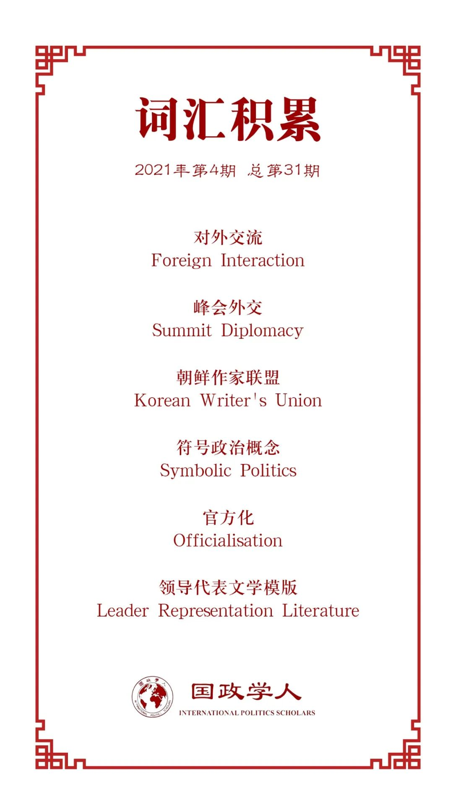

收录于合集

作品简介
【作者】 Meredith Shaw，东京大学社会科学研究所副教授，研究兴趣为东亚比较政治及国际关系研究。
【编译】 扎西旺姆（国政学人编译员，剑桥大学亚洲与中东研究硕士）
【校对】 姚博闻
【审核】 王嘉许
【排版】 韩心蕊
【美编 】李九阳
【来源】 Shaw, M. (2020). The abyss gazes back: how North Korean propaganda interprets sanctions, threats and diplomacy, The Pacific Review , 1–27.
【归档】 《国际关系前沿》2021年第4期，总第31期。
期刊简介
《太平洋评论》（ The Pacific Review ）是太平洋地区研究的主要平台，作为跨学科期刊，其宗旨和目标为打破研究领域之间以及学术界、新闻界、政府和商界之间的壁垒，重点关注政策问题。根据Journal Citation Reports显示，2019年该刊的影响因子为1.633，在区域研究类SSCI期刊中排名11/77，在国际关系类SSCI期刊中排名第35/95。
深渊回眸：
朝鲜宣传如何解读制裁、威胁和外交？
The abyss gazes back:
how North Korean propaganda interprets sanctions, threats and diplomacy
Meredith Shaw
关键词 ：政治宣传；政治传播；制裁；峰会外交；
内容提要
本文通过研究朝鲜国产文学作品，探讨了该政权过滤和重新诠释来自外部世界的各种“信息”的方式。概括地说，作者确定了三种主要的对外交流类型，即经济制裁、峰会外交和军事演习/舰队调动，并研究了朝鲜作家联盟（Korean Writer’s Union，朝鲜劳动党宣传鼓动部的一个重要部门）所制作的朝鲜小说是如何处理这些互动的。三种互动类型中的每一种都代表了外部政府– 通常是美国或其盟友–向朝鲜政权或其人民发出信息，从而塑造他们的行为和/或对外部世界的看法的官方努力。通过研究这些 “信息 ”在朝鲜小说中的呈现方式，读者可以深入了解该政权如何塑造关于外交事务的内部叙事，以及什么是它最急于拦截或破坏的替代性叙事。
文章导读
01
导言
朝鲜国产小说通常被外部政治分析家所忽视，他们更关注重要讲话和朝鲜中央通讯社（KCNA）的英文文章。但依赖这些来源可能会被误导；正如迈尔斯写道，“太多观察家错误地认为，（朝鲜）中央通讯社的英文稿件反映的和其国内受众所得到的是同一种宣传。事实上，两者有很大的不同”。在朝鲜所形成的独特的媒体环境中，小说是被忽视的一种方式，党在内部将其不断变化的优先事项和宣传叙事传达给普通工人，通常是通过集体学习会（group study session）和意识形态教育课程。故事往往集中在描写领导人的特点、介绍党的新举措、解释国家对各行业的投资以及展示自我牺牲的公民的理想范例，以供人效仿。
当然，朝鲜还有许多其他的宣传产品在这一体系中发挥着重要作用，但小说为政治分析提供了一个独特而具吸引力的目标—小说比电影或电视剧更明确地以政策为导向，后两者很少在旧的战争电影之外描述领导人；小说比新闻广播或纪录片更灵活，更有解释力，因为后者不能描述领导人的内心想法或与他们互动的人物的反应；小说比诗歌或艺术更具体，更有阐释性。此外，小说还有一个重要的揭示时间的因素：新闻广播是即时播出，并因受制于记录的镜头而限制了可操作性，但对事件的文学描述通常直到几年后才出版，并且较少受到客观可见的现实的约束。这种时间的推移也意味着，历史小说代表了该政权对事件的最终决定的叙述（ultimate agreed-upon narrative of events ），而这种叙述往往与其即时的新闻媒体反应不同。
对党内指导性宣传进行仔细的批判性解读，可以使人们深入了解党的工作重点、关注点和对未来的期望。本文的其余部分如下：第一节通过朝鲜国产文学作品，探讨分析朝鲜传播策略的优点和陷阱，同时也介绍了几种将国家文学作品作为宣传品来评价的理论工具。随后的实证部分主要通过对相关作品的精选摘录和总结，依次探讨三种外国信息类型的虚构处理。最后一节回到理论工具，评价其在朝鲜文学中的适用性，同时探讨其对未来朝鲜政策的一些影响。
02
朝鲜文学的政治传播研究
作者认为，朝鲜的文学作品无意中揭示了朝鲜政权的优先权、期望、希望、恐惧和传统智慧。作为远离朝鲜政权内部思想的局外人，作者提出了对这种夸张地谄媚国家的文学作品作用的三种推测。第一种也是最明显的是拉斯韦尔数十年前发展起来的经典工具主义大众传播方法。在这种观点中，宣传是一种影响大众舆论，使其支持政权，说服公众采取行动并支持其政策的工具。它代表了该政权有意识的（conscious）以及深思熟虑的（deliberate）努力以将公众的意见和信仰引向该政权偏好的叙述。
另一种来自社会人类学领域的方法是布迪厄的“官方化”概念（officialisation），这一概念将宣传定义为 “群体（或支配群体的人）自我教导并掩盖自身问题的真相，通过一种公共职业来约束自己，而这种公共职业会制裁和强加自己的言论……[并]有助于维护社会秩序，而它正是从这种社会秩序中获得权力的”。在这个概念中，执政的官僚机构设计了一个对现实有利的版本，然后用宣传将其成员捆绑在这个被认可的叙事中。
第三种来自韦登的符号政治概念（symbolic politics）。在叙利亚阿萨德政权的语境中，韦登提出，该政权通过强制公民参与那些对策划者和消费者来说都是明显虚假的跪拜仪式来培养遵从的行为。换句话说，专制政体所颂扬的最离谱的宣传其实未必是为了塑造信仰，相反，通过强迫选民接受和重复那些明显虚假或夸大的言论，专制政体展示了其权力的范围，并加深了人们对不服从行为后果的恐惧。在这种观念中，宣传的主张越是荒谬，国家在公众面前就越是显得强大。
朝鲜民众能否接触到朝鲜劳动联盟的文学作品似乎在很大程度上取决于其个人的情况。在笔者非正式调查的20名脱北者中，只有约一半人看过朝鲜作家联盟制作的文学杂志，而且其中大部分人来自平壤。鉴于脱北者人群偏向于较为弱势的朝鲜人，这支持了该类国产文学主要面向居住在城市的精英和党员并针对他们进行创作的观点。Lim提醒说，朝鲜的小说以及一般的大众文化，不能理解为民众需求意义上的 “大众文化”，因为它没有受到资本主义的普及或销售观念的影响。绝大多数的影响来自于朝鲜作家联盟内部编辑的意识形态需求。
要想确定朝鲜国产小说的作用和意图，就有必要对其内容进行更仔细的研究: 工具主义的大众传播、布尔迪厄式的官方化、韦登的仪式性服从，或者这三者的某种组合。下面的例子应该能够提供一些清晰的信息，同时也能说明朝鲜如何通过文学在国内重新诠释各种外交往来。本文将重点关注那些提到对外交流和制裁的叙事。由于本文的重点是朝鲜与西方的互动，作者的调查仅限于1994年第一次核危机以来发表的故事；对更长时间内的小说叙事进行比较研究也是有价值的，但这超出了本文的范围。
03
三类对外交流类型的描述
1. 制裁
制裁是朝鲜分析家和政策制定者之间长期争论的话题。对经济制裁影响的分析大多集中在评估经济制裁如何影响对朝鲜政权的内部支持。毕竟，制裁是为了向该国的统治者及人民传递信息。然而内部文献显示，朝鲜人被教导以意想不到的方式理解和回应制裁所传递的信息。
金正日与美国前总统卡特于首脑会晤中关于制裁对话的事件在多部小说和文章中反复出现，这表明了与美对话在朝鲜劳动党内有关制裁的信息中所处的天选之高位（canonical place）。制裁也被描绘成资本主义世界害怕朝鲜潜力的标志，制裁也被描述为能够间接促进积极发展，因为它迫使朝鲜人自力更生，发展自己的技术。与制裁相关的宣传是如此描绘的：朝鲜对美国主导的国际秩序的孤军奋战的自豪感，使得其他国家(尤其是俄罗斯)感到敬畏和钦佩，无名的欧洲公司勉强遵守制裁，但暗地里却希望自己能抵制制裁。
宣传故事也沿用最常见的领导代表文学模版（leader representation literature）将领导人描述为导师、啦啦队和主要的问题解决者。这类故事几乎总是以领导人的一次讲话为高潮，其中包含了当下关键的政治口号，这些从海报、歌曲和报纸社论中的出现就可以看出。正是这类讲话，无一例外地激励主人公取得关键性的突破，因此，利用叙事在意识形态原则和现实生活场景之间建立起被强化的心理联系（rote mental association）。在领导人没有直接露面的故事中，部分公民的角色充当了理想行为的原型以突出其在面对制裁所引起的物资短缺时的自我牺牲精神及聪明才智。
在金正恩时代的小说中，自主和个人创新的理想与制裁的关系越来越密切。同时，制裁及其影响与“强大的国家”和“自我复兴”的口号紧密联系在一起，歌曲、海报和社论强化了这种文学的信息。作者指出，朝鲜政权利用外部制裁的现实，为自己的成就（包括真实的和想象出来的）争得更多的荣誉，同时通过沉没成本的概念，鼓励民众坚持奉行孤立主义。
总的来说，这些故事显示了外部制裁如何在朝鲜宣传中被解释为敌人绝望的信号和让人民作出更大牺牲的号召。这一信息如果正确的话，似乎支持了Pape的论断，即 “外部压力更有可能增强统治者的民族主义合法性，而不是破坏它”。特别是在应对经济压力时，这种宣传利用了朝鲜人对其节俭、勤劳和反抗精神的自豪感。
2.外交峰会/特使
朝鲜小说很少以朝鲜以外的地方为背景。有学者指出，这样的故事被认为是具有意识形态缺陷的，作者在创作这些小说时面临着结构性的抑制因素。在这种限制之下，外国使节访问朝鲜的故事为朝鲜人想象外国土地和人民提供了一个罕见而重要的出口，同时也让他们想象自己的国家在世界各国的来访者眼中的地位如何。
作者指出，朝鲜文学对外国代表团做出一些概括性的描述—即通过外国人的眼光来描绘朝鲜，这是一个提升国内对从建筑到美食的自豪感的机会。来访者通常被描绘成积极的，似乎马上就被领袖迷住了，变成了完全的赞许，而他们国内的神秘势力却继续阻挠进展。这些故事煞费苦心地强调其中涉及的利害关系，以及在战争似乎迫在眉睫之际，领导人的善良如何缓解紧张局势。三位金氏家族的领导人都被描绘成热情、合群、风趣、迷人、注重细节、见多识广并拥有超乎寻常的智慧，他们对细节的认真观察让宾客感到放松和惊讶。无论年龄大小，金氏领导人总是在每次互动中扮演资深的合作伙伴的角色; 在谈话时，他们总是使用平语（朝鲜语中平辈之间的用语），而外国政要的讲话则是用敬语风格来称呼尊敬的长者。Myers观察到，即使在很少描写的外国人和普通朝鲜人之间的互动中，也是这种模式。
3.部队调动及演习
自朝鲜战争因停火协议而被冻结以来的几十年里，战争双方都依靠部队调动和军事演习来展示在关键时刻的决心和准备。随着时间的推移，举行或取消美韩联合演习的决定本身已成为谈判者为向朝鲜发出意向信号而部署的胡萝卜和大棒的一部分。同样，舰队调动已成为对朝鲜导弹试验和其他不良行为的例行反应。朝鲜媒体很乐意报道这些行动，国产小说则利用这些行动来加剧危机感，同时也说明敌人的口是心非和领导人在冲突中的能力。
作者指出，小说所传达的基本威胁是，联合演习始终是美国动员和准备随时可能发生的入侵的幌子。因此，它们既被用来预告战争威胁的长期性和敌人的背信弃义。但这也暗示了该政权对稳定的偏好，因为它设定了一种情景，即报复不是最明智的反应。
随着一个没有战争经验的朝鲜第三代领导人的出现，美韩的军事行动以及伴随而来的朝鲜反应在另一个方面被证明是有用的：为金正恩作为一个果断的军事指挥官的形象增色。读者可以通过他对美韩军事演习和其他行动的反应认识到这位新领导人的战略能力和意志力。情节还突出了年轻的新指挥官对军事战术的理解如何给经验丰富的老将军们留下了深刻的印象，并使他们放心。
最后，对外国部队调动的小说描写可能会起到鼓舞部队士气的作用，并给无休止的演习提供一种目的感，因为敌军被描述为很容易被人民军部队进行演习的景象吓倒。除了再次证明领导人的军事敏锐性外，这些轶事还有助于说明战争时刻迫在眉睫，因此需要保持警惕；而且还可以使无休止的操练和演习更有意义，因为这些操练和演习大大消耗了国家有限的资源。
04
结论
在考虑制裁、峰会外交和军事演习时，分析往往关注这些行动所传递的 “信息”。对于以政策向世界其他地区传递我们关于优先事项和决心的信息而言，这种担心可能是有道理的，但如果这些担心是为了让朝鲜内部的人了解，那么它们就低估了朝鲜政治信息传递的基本性质和朝鲜塑造对内叙事的能力。事实上，朝鲜党的宣传机关已经有了陈旧的模板用不同的方式来解释这些发展，以支持人民对政权的忠诚度以及最大限度地提高人民自我牺牲的意愿。在没有接触到朝鲜读者的广泛样本的情况下，试图对这些作品如何有效地发挥大众劝说工具的功能作出任何明确的结论都是愚蠢的。
在分析国家宣传时，作者提出必须同样关注未被提及的内容。正如前言中提到的，作者最初考虑将人道主义援助作为第四个信息类别，但最终打消了这一观点，因为它似乎很少在朝鲜文献中被提及。这本身就极富启示性，它表明人道主义援助是朝鲜政权无法或不愿将其纳入宣传叙事的一种外国信息。特别是考虑到朝鲜国内“艰苦行军”时朝鲜面临“历史上最严厉的”外国制裁的既定说法，官方很难解释这些外来援助的出现。因此，对于那些仍想向朝鲜人民传递信息的人来说，人道主义援助可能是突破国家宣传过滤机制的最有希望的途径之一。
作者表示，在阅读西方关于朝鲜的分析和政策简报时，他经常想起尼采经常引用的格言：“如果你长期凝视深渊，深渊也会凝视你”。很多时候，当我们在政权内部大声制定我们要发出什么信息，向谁发出信息的时候，我们却忘记了，目标政权会认真倾听我们制定的战略，并据此策划自己的内部信息传递。虽然我们绝不能对与该政权沟通和达成相互的理解感到绝望，但我们的政策应始终以了解该政权的内部信息管理和可预测的宣传对策为指导。
译者评述
在朝鲜这样的国家，由于信息获取的严格性，国家媒体和宣传在引导群众的思想和行为方面发挥着重要作用。作为政治宣传的主要工具之一，对这些信息载体的分析已经涉及KCNA英文报刊（Rich 2014），国内报刊劳动新闻(Muhs 2015; Isozaki and Hendriks 2017)等。本文着眼于朝鲜的国产文学作品，通过具体分析朝鲜关于对外的三类互动形式—经济制裁、峰会外交和军事演习的文学呈现，探讨了该政权过滤和重新解读外部信息的机制和特点。
正如作者所指出的，对党内指导性宣传进行仔细的批判性解读，可以使人们深入了解党的工作重点、关注点和对未来的期望。未来关注文学作品对于国内社会的呈现与解读，也可以了解官方试图灌输的政府与社会的关系是如何的，领导人的角色是否产生了变化。但在多大程度上，政治宣传的文本被受众所接受并产生影响，是难以估量的。尤其是面对朝鲜逐渐恶劣的国内经济形势，连番的经济制裁及自然灾害对朝鲜民众生活境遇所造成的严厉打击，以及对外贸易和私人市场繁荣所提高的信息交流度，在多大程度上国内叙事是被民众接受或挑战是有待考证的。
此外，由于作者给出的是关于对外事务呈现的概括性，该统一的叙事模式，未能就时间线的推进探讨特定时间点或事件前后可能存在的变化。这可能会忽略在2017年朝鲜对外关系显著变化后宣传层面可能存在的改变。同时，将信息的受众框定于朝鲜民众这一个整体，而不作侧重性的讨论，可能会忽略朝鲜官方对于特定群体（如青年或精英团体）不同的宣传重点。
最后，正如作者所言，朝鲜官方如何解释人道主义救援的来源确是一个尚未被内部提及的话题。但常年的援助行动之下，朝鲜严格的信息控制机制仍使得民众对于援助内容知之甚少。对于人道主义救援主题的有意忽略，意味着这与其对外制裁的严厉后果的叙述逻辑不符合。这一突破口是否真的能发挥作用，是有待质疑的。
作者所提出的深渊回眸的思路是新颖且需要肯定的。在此逻辑之下，朝鲜对外部信息的处理不仅仅限于国内的民众（Asmolov and Vasilii 2021）。在外部信息向朝鲜重重渗透之时，朝鲜也在通过社交网络向外部的受众输出观念和朝鲜社会的叙事。其发布的主要内容主要是试图消除对朝鲜的误解，报道涉及朝鲜国内重大事件，宣传朝鲜的自给自足、美景及传统、品牌产品及旅游景点。尽管目前的影响力相当有限，但2017年开始更新逐渐频繁的youtube视频及twitter和微博上的信息分享，都可以看出朝鲜对外重塑叙事的努力。
参考文献
[1]Asmolov, K. V., & Lebedev, V. V.(2021). North Korea’s Ideology and Propaganda: Signs of Change.
[2]Muhs, J. (2015). Militaristic Propaganda in the DPRK-The heritage of Songung-Politics in the Rodong Sinmun under Kim Jong-Un (Bachelor’s thesis, University of Twente).
[3]Rich, T. (2014). Propaganda with purpose: uncovering patterns in North Korean Nuclear Coverage, 1997–2012. International Relations of the Asia- Pacific , 14(3), 427-453.
词汇整理

文章观点不代表本平台观点，本平台评译分享的文章均出于专业学习之用, 不以任何盈利为目的，内容主要呈现对原文的介绍，原文内容请通过各高校购买的数据库自行下载。
好好学习，天天“在看”
国政学人
支持学术公益与知识传播
微信扫一扫赞赏作者 __赞赏
已喜欢，对作者说句悄悄话
取消 __
发送给作者
发送
最多40字，当前共字
上一页 1/3 下一页
长按二维码向我转账
支持学术公益与知识传播
受苹果公司新规定影响，微信 iOS 版的赞赏功能被关闭，可通过二维码转账支持公众号。